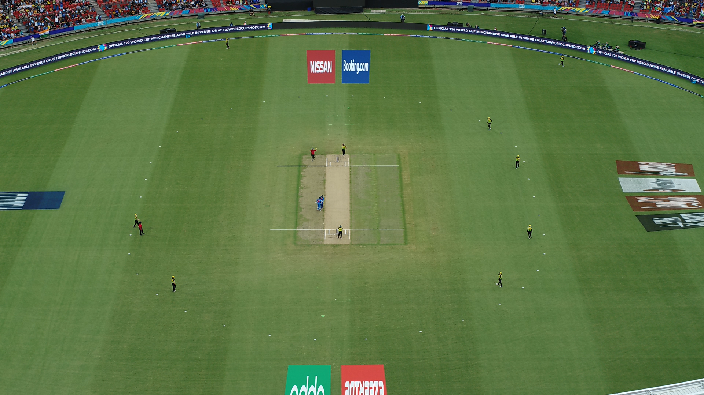

An application to track and detect players of Indian Women's National Cricket Team playing in the international stadium. It uses Intel OpenVino for optimal utlisation of the hardware for optimal performance. It can accept input in 2 forms :
image
video
Sample application input and output :
Image :
 Frame containing players playing in a international stadium Frame containing players with detected and tracked players
Video : Video input containing players Video output with players detected and tracked
Code access and more details related to model used for inferencing and implementation :